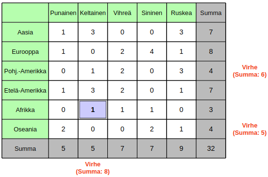

Ratkaisu
"Pohj.-Amerikka"-rivin ja "Vihreä"-sarakkeen summat ovat väärin: yksittäisten lukujen summat laskemalla saadaan tuloksiksi 7, vaikka summien pitäisi olla 6. Koska vain yksi taulukon luku on väärin, on sen sijaittava virheellisen rivin ja virheellisen sarakkeen risteyksessä. Summat saadaan oikeiksi vähentämällä risteyksen lukua yhdellä. Ratkaisu on esitetty alla:
Tässä versiossa on kaksi riviä ja kaksi saraketta, joiden summat pitää korjata. Koska virheellisiä lukuja on kaksi, pitää niiden sijaita näiden sarakkeiden ja rivien risteyksissä. Tällaisia risteyksiä on neljä, ja meidän pitää valita niistä sopivat kaksi.
""Afrikka"-rivin summasta pitäisi vähentää 1, mutta sen ja "Keltainen"-sarakkeen risteyksessä on luku 0. Lukua -1 ei ole tarjolla, joten kyseinen risteys jätetään ennalleen. "Afrikka"-rivi pitää siten korjata muuttamalla sen ja "Sininen"-sarakkeen risteyksessä oleva luku arvosta 1 arvoon 0. Tämän jälkeen enää "Eurooppa"-rivi ja "Keltainen"-sarake ovat virheellisiä, joten toinen korjaus tehdään niiden risteykseen: muutetaan siinä oleva luku arvosta 1 arvoon 2. Ratkaisu on esitetty alla:
Kolme riviä ja yksi sarake ovat virheellisiä. Aloitetaan tarkastelu "Keltainen"-sarakkeesta, jonka summa pitäisi pienentää 9:stä 5:een. Tämä vaatii vähintään kahden luvun pienentämistä, koska sarakkeen kaikki luvut ovat pienempiä kuin 4. Otetaan lähtökohdaksi "Keltainen"-sarakkeen korjaaminen muuttamalla kahta sen lukua.
Muutettavia lukuja ei voi valita umpimähkään. Jos esimerkiksi muuttaisimme rivien "Pohj.-Amerikka" ja "Etelä-Amerikka" luvut, päätyisimme tilanteeseen, jossa on neljä virheellistä riviä, ja näitä ei olisi enää mahdollista korjata jäljellä olevilla 3 muutoksella (tässä versiossahan saa muuttaa 5 lukua).
Pyritään siis korjaaman "Keltainen"-sarake kahdella luvulla niin, että sen jälkeen on 3 virheellistä riviä (jotka voisi korjata jäljelle jäävillä 3 muutoksella). Tämä onnistuu vain siten, että toinen "Keltainen"-sarakkeen muutos korjaa yhden rivin ja toinen puolestaan rikkoo yhden rivin. Ainoa "Keltainen"-saraketta muuttamalla korjattavissa oleva rivi on "Afrikka": asetamme siihen arvon 1.

Tämän jälkeen "Keltainen"-sarakkeen korjaus yhdellä lisämuutoksella vaatii toisen sen kahdesta 3:sta muuttamisen 0:ksi. Kokeillaan tehdä tämä "Etelä-Amerikka"-rivillä:
Nyt on jäljellä kolme virheellistä riviä. Jotta emme rikkoisi yhtään saraketta, pitää kaikki jäljellä olevat korjaukset kohdistaa samaan sarakkeeseen (siten, että niiden vaikutus sarakkeeseen on +- 0). Vain "Ruskea"-sarakkeen virheellisten rivien luvut mahdollistavat tämän. Alla on näytetty valmis ratkaisu:
Toinen mahdollinen ratkaisu tekee "Keltainen"-sarakkeen toisen muutoksen "Aasia"-riville:
Myös tällöin jäljellä olevat 3 virheellistä riviä voidaan korjata muuttamalla "Ruskea"-sarakkeen lukuja. Alla on näytetty tämä vaihtoehtoinen valmis ratkaisu:
Tämä on tietojenkäsittelyä!
Tehtävä havainnollistaa tietojenkäsittelyssä käytettyjä virheenkorjauskoodeja. Kaiken tietokoneiden käsittelemän datan voidaan pohjimmiltaan tulkita koostuvan joukosta lukuja (esimerkiksi luvuista 0 ja 1 koostuvista bittijonoista). Kun tietoa tallennetaan levylle tai siirretään esim. internetin välityksellä tietokoneelta toiselle, voimme haluta varmistua siitä, ettei tallennuksen tai tiedonsiirron aikana tapahtunut virhettä (jokin datan sisällä oleva luku onkin tallennettu tai vastaanotettu väärin). Vaikka tekniikka onkin nykyisin varsin kehittynyttä ja hyvälaatuista, ei tällaisten virheiden ilmeneminen ole lainkaan tavatonta. Yksi yleisesti käytetty tapa havaita dataan ilmaantunut virhe on täydentää dataa jonkinlaisella niin sanotulla virheenkorjauskoodilla. Tavoitteena on suunnitella virheenkorjauskoodi sellaiseksi, että sen pohjalta voimme todennäköisesti sekä havaita, onko datassa virheitä, että sen lisäksi myös korjata mahdolliset virheet.
Tehtävän tapauksessa varsinainen data koostui taulukon valkoisten ruutujen luvuista, ja harmaiden reunusten summat toimivat virheenkorjauskoodina. Jos jonkin sarakkeen tai rivin lukujen summa ei täsmää kyseiselle sarakkeelle tai riville ilmoitetun summan kanssa, tiedetään sarakkeessa tai rivissä olevan virhe. Kuten tehtävän ratkaisut havainnollistivat, voi tällaisessa tilanteessa olla mahdollista myös korjata virheet. Jos taulukkoon tulee yksi virhe, on rivi- ja sarakesummien avulla aina mahdollista korjata virhe. Tämä on jo kohtalaisen hyvä lopputulos, koska datassa esiintyvät virheet ovat kuitenkin verrattain harvinaisia: virheitä toisinaan esiintyy, mutta useiden samanaikaisten virheiden todennäköisyys lienee pieni.
Katso lisää esim. https://fi.wikipedia.org/wiki/Virheenkorjauskoodi.